Public reference gallery
This public version preserves the library structure without bundling private screenshots or crops derived from references.
This public version preserves the library structure without bundling private screenshots or crops derived from references.
Visual organization examples for a category focused on observation, appearance, and light reduction.
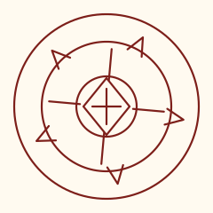
Gathering ShadowsVisionExperimental reconstruction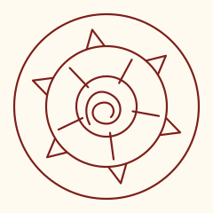
Light-Reducing SpellVisionExperimental reconstruction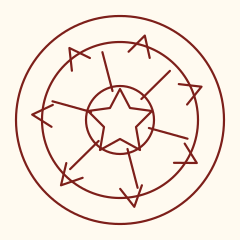
Makeover Mask SpellVisionExperimental reconstructionComposition examples that combine several signals around one circle.
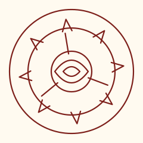
Beast RepellentMixedExperimental reconstruction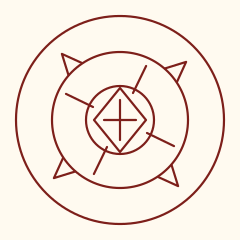
Cloak SpellMixedExperimental reconstruction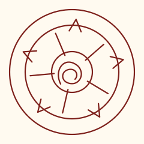
Floating DropsMixedExperimental reconstruction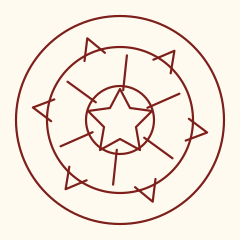
Warmth-Retention SealMixedExperimental reconstruction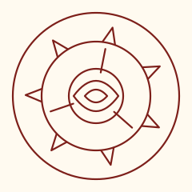
Frozen PathMixedExperimental reconstructionMore specific examples showing how the gallery keeps a consistent grid.
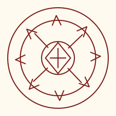
Billow ClusterNicheExperimental reconstruction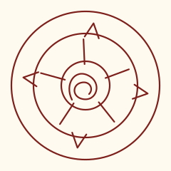
Cookpot LidNicheExperimental reconstruction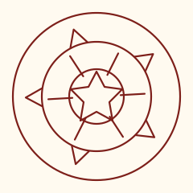
Fish GuidanceNicheExperimental reconstruction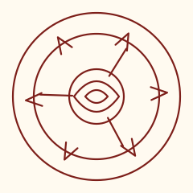
Floating ExpansionNicheExperimental reconstruction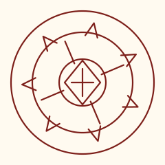
LockwaxNicheExperimental reconstruction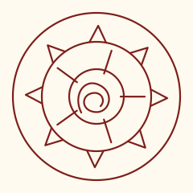
Mirror SpellNicheExperimental reconstruction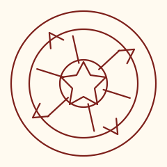
Sand BridgeNicheExperimental reconstruction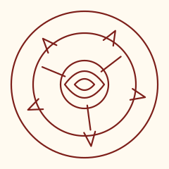
Tracking SpellNicheExperimental reconstruction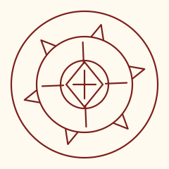
Smokesculpting SealNicheExperimental reconstruction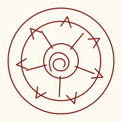
Windowway SpellNicheExperimental reconstruction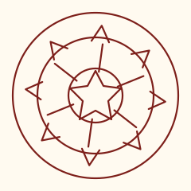
Enchanted Doorknob SealNicheExperimental reconstruction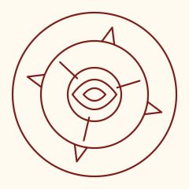
Smoke CloudNicheExperimental reconstruction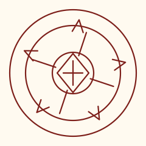
Beldaruit's Illusion CloakNicheExperimental reconstruction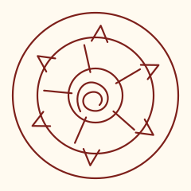
Advanced BeastwardingNicheExperimental reconstruction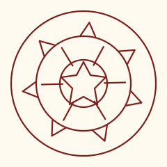
Amplification ScrollNicheExperimental reconstruction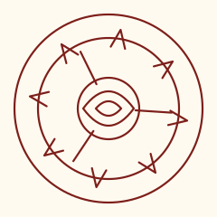
Garment-Glimpse GlassesNicheExperimental reconstruction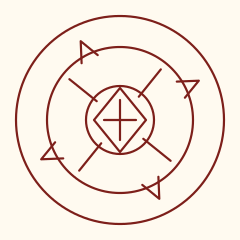
Handheld WindowwayNicheExperimental reconstruction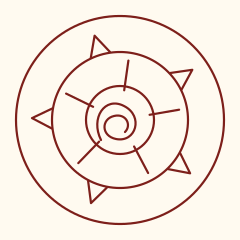
Owlcat ProjectionNicheExperimental reconstruction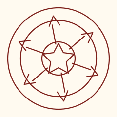
Rain GuardNicheExperimental reconstruction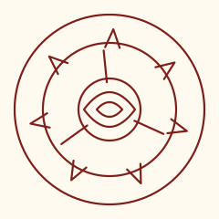
Pouch GuidanceNicheExperimental reconstructionHistorical examples shown for the grid structure, without bundled reference assets.
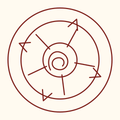
Scalewolf CurseAncient / ForbiddenExperimental reconstruction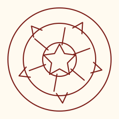
Illusory LabyrinthAncient / ForbiddenExperimental reconstructionHistorical examples compatible with the simplified public gallery.
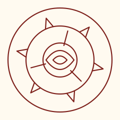
Twinned Bottles' SpellAncient / Non-ForbiddenExperimental reconstruction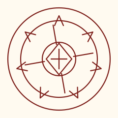
Ancient Light BeaconAncient / Non-ForbiddenExperimental reconstruction